Ten Kroner
Oscar II (1877-1902)
Haakon VII (1910)
Olav V (1983-1991)
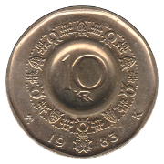 1983 K
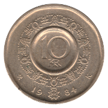 1984 K
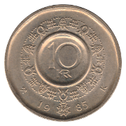 1985 K
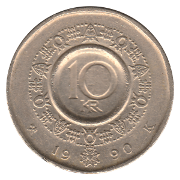 1990 K
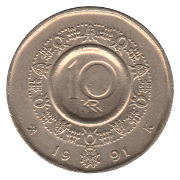 1991 K
Harald V (1995-Date)
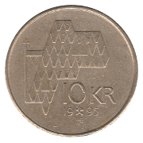 1995 JJE
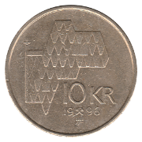 1996 JJE
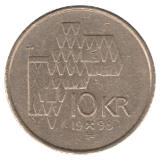 1998 JJE
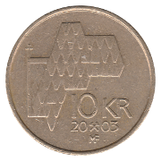 2003 MF
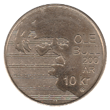 2010 Ole Bull
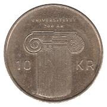 2011 Norway University
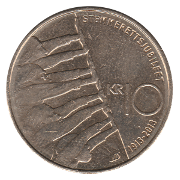 2013 Universal Suffrage
Back to Norway
Back to Home